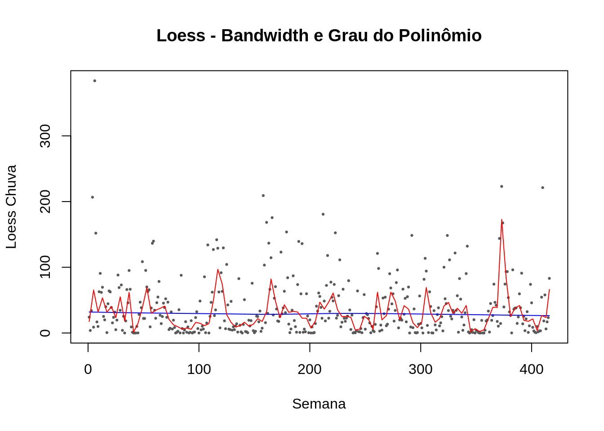
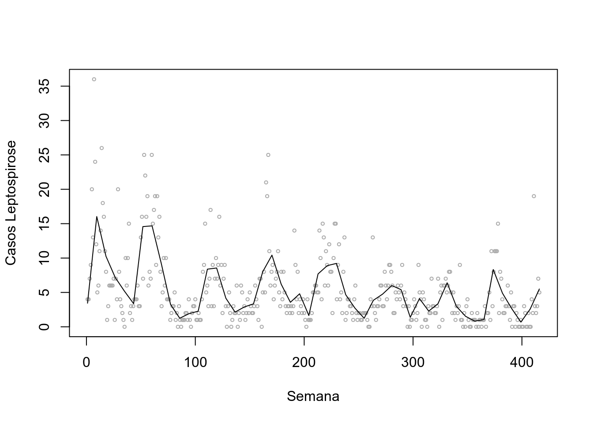
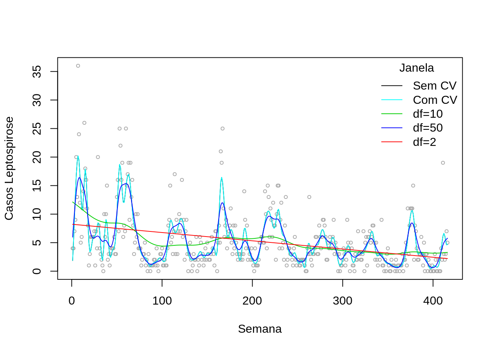

5 Análises Preditivas - Parte I
5.1 Predição
Predizer o futuro possibilita:
Fazer planos a longo, médio e curto prazo;
Tomar decisões apropriadas.
Futuro envolve incerteza \(\Leftrightarrow\) previsões não são perfeitas.
Objetivo é reduzir ao máximo os erros de previsão.
5.2 Por que dos erros ?


Conceitualmente, toda previsão está errada
O objetivo é minimizar o erro (torna-lo menor possível)
5.3 Regressão Linear vs Séries Temporais

5.4 Como prever usando séries temporais ?
Usando os próprios dados – Séries temporais puras
Usando outras variáveis – Modelo explanatório
Usando as duas técnicas – Modelo misto
5.4.1 Modelagem, aprendizado e previsão
A parte central da análise de ST, é a construção de um modelo. Tal modelo pode ser do âmbito matemático, estatístico e/ou computacional.
Modelo - esquema de descrição (explicação) que organiza a informação (experiência) de forma a propiciar aprendizagem (informação) e previsão.
Bom modelo permite aprendizado levando a previsões adequadas.
• Devido à incerteza presente, modelo é probabilístico;
• Deve também ser parcimonioso;
• Deve ser relativamente simples e flexível para poder se adaptar ao futuro (incerto) e facilitar aprendizado;
• Aprendizado é o processamento de informaçãoo através do modelo;
• Previsão é a hipótese, conjectiva ou especulação sobre o futuro.
Esquema de um sistema de previsão:

Análise de Séries Temporais - Prof. Hélio Migon (IM/DME/UFRJ)
5.5 Considerações sobre previsões


Para ajustar um bom modelos devemos:
Avaliar os resíduos;
Avaliar a performance do modelos (MAE,RMSE etc.);
Avaliar as métricas (AIC, BIC etc.).
Dicas gerais:
Uma boa análise dos resíduos em conformidade não indicam por si só um bom modelo;
Um primeiro modelo bom, provavelmente pode ser melhorado;
Inteligência inclui a capacidade de escolher as informações relevantes (seleção de variáveis).
5.6 Algumas técnicas para previsão em ST
5.6.1 Técnicas Simples
Naive
Mean
Drift
5.6.2 Técnicas Clássicas
Suavização Exponencial (Holt-Winters)
ARIMA
Regressão
5.6.3 Técnicas Avançadas
Modelos de equações simultâneas ou econométricos
Redes Neurais
Modelos de espaço de estados ou dinâmicos
5.7 Naive
Naive Simples: Projeta o último valor para o futuro.
Naive Sazonal: Para dados com sazonalidade presente, ele considera o último valor no mesmo período de tempo.


Aplicando a técnica de previsão nos casos de dengue:
# Naive Simples
# Faz a previsao para cinco meses
prev = naive(denguecasests, h=5, level = c(80, 95))
autoplot(prev)| Point Forecast | Lo 80 | Hi 80 | Lo 95 | Hi 95 | |
|---|---|---|---|---|---|
| Jan 2017 | 116.4107 | -102.1065 | 334.9279 | -217.7825 | 450.6039 |
| Feb 2017 | 116.4107 | -192.6193 | 425.4406 | -356.2098 | 589.0312 |
| Mar 2017 | 116.4107 | -262.0722 | 494.8935 | -462.4289 | 695.2503 |
| Apr 2017 | 116.4107 | -320.6237 | 553.4450 | -551.9757 | 784.7970 |
| May 2017 | 116.4107 | -372.2086 | 605.0299 | -630.8680 | 863.6894 |
# Naive Sazonal
# Faz a previsao para cinco meses
# Default level = c(80, 95)
prev = snaive(denguecasests, h=5, level = c(80, 95))
autoplot(prev)
| Point Forecast | Lo 80 | Hi 80 | Lo 95 | Hi 95 | |
|---|---|---|---|---|---|
| Jan 2017 | 18.94775 | -201.12623 | 239.0217 | -317.62635 | 355.5218 |
| Feb 2017 | 145.36292 | -74.71105 | 365.4369 | -191.21117 | 481.9370 |
| Mar 2017 | 194.46347 | -25.61051 | 414.5374 | -142.11063 | 531.0376 |
| Apr 2017 | 362.34941 | 142.27544 | 582.4234 | 25.77531 | 698.9235 |
| May 2017 | 201.73756 | -18.33642 | 421.8115 | -134.83654 | 538.3117 |
# Comparando os valores preditos com os valores observados
kable(window(denguecasests, start=c(2016,1), end=c(2016,5)))| x |
|---|
| 18.94775 |
| 145.36292 |
| 194.46347 |
| 362.34941 |
| 201.73756 |
5.8 Mean
- Calcula a média e usa como previsão para o futuro.

Aplicando a técnica de previsão nos casos de dengue:

| Point Forecast | Lo 80 | Hi 80 | Lo 95 | Hi 95 | |
|---|---|---|---|---|---|
| Jan 2017 | 192.0458 | -8.688675 | 392.7803 | -116.5455 | 500.6371 |
| Feb 2017 | 192.0458 | -8.688675 | 392.7803 | -116.5455 | 500.6371 |
| Mar 2017 | 192.0458 | -8.688675 | 392.7803 | -116.5455 | 500.6371 |
| Apr 2017 | 192.0458 | -8.688675 | 392.7803 | -116.5455 | 500.6371 |
| May 2017 | 192.0458 | -8.688675 | 392.7803 | -116.5455 | 500.6371 |
[1] 560.6806
Previsão baseada apenas no último ano da ST.
# fazendo uma previsao com um subconjunto dos dados
denguecasests2 = window(denguecasests,start=c(2016,1),end=c(2016,12))
autoplot(denguecasests2)[1] 154.9275

| Point Forecast | Lo 80 | Hi 80 | Lo 95 | Hi 95 | |
|---|---|---|---|---|---|
| Jan 2017 | 154.9275 | 9.290712 | 300.5643 | -80.17393 | 390.0289 |
| Feb 2017 | 154.9275 | 9.290712 | 300.5643 | -80.17393 | 390.0289 |
| Mar 2017 | 154.9275 | 9.290712 | 300.5643 | -80.17393 | 390.0289 |
| Apr 2017 | 154.9275 | 9.290712 | 300.5643 | -80.17393 | 390.0289 |
| May 2017 | 154.9275 | 9.290712 | 300.5643 | -80.17393 | 390.0289 |

5.9 Drift
Faz uma previsão linear para o futuro acompanhando a tendência da série;
Equivale a plotar uma reta entre o primeiro e último valor da série;
Pode sr utilizado em ST com a tendência expressiva.


Aplicando a técnica de previsão nos casos de dengue:
# Faz a previsao para 12 meses
par(mfrow=c(2,2))
# Exatamente igual ao Naive
prev1 = rwf(denguecasests, h=12, drift = F)
autoplot(prev1)

Para visualizar melhor o uso dessa função, vamos utilizar o dataset do próprio R chamado austres (Números (em milhares) de residentes australianos medidos trimestralmente de março de 1971 a março de 1994).
# Faz a previsao para 12 meses
par(mfrow=c(2,2))
# Exatamente igual ao Naive
prev1 = rwf(austres, h=12, drift = F)
autoplot(prev1)